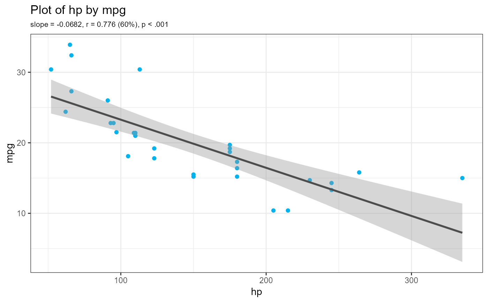
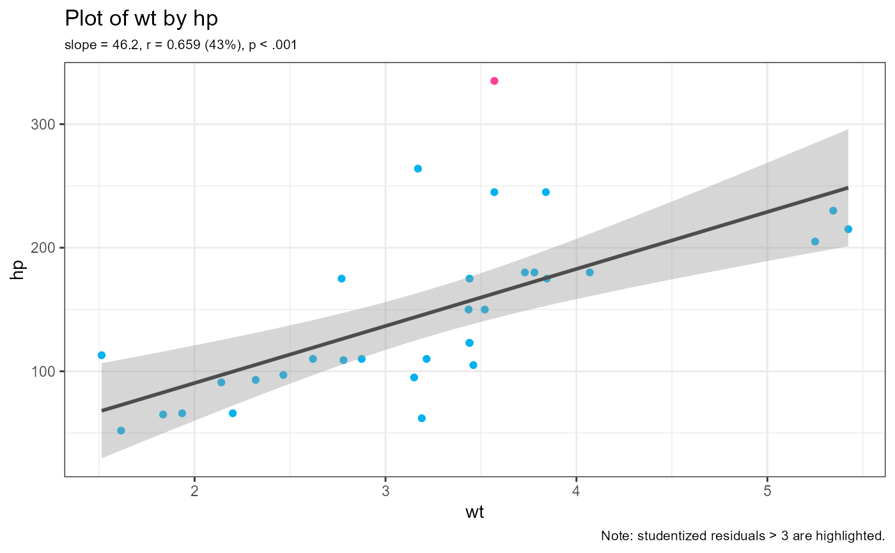
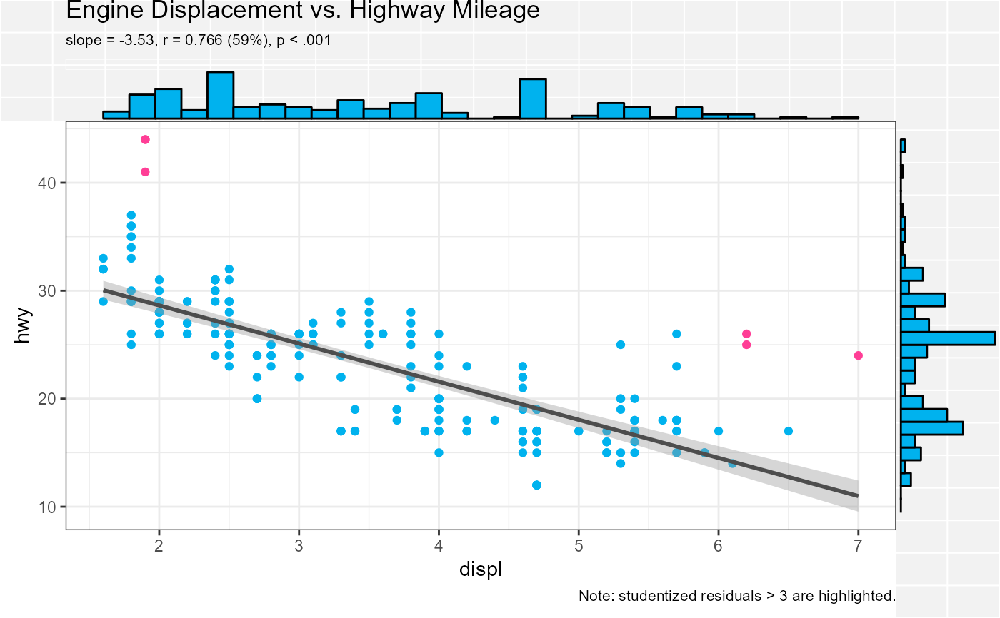

Create a scatter plot between two quantitative variables.
scatter( data, x, y, outlier = 3, alpha = 1, digits = 3, title, margin = "none", stats = TRUE, point_color = "deepskyblue2", outlier_color = "violetred1", line_color = "grey30", margin_color = "deepskyblue2" )
| data | data frame |
|---|---|
| x | quantitative predictor variable |
| y | quantitative response variable |
| outlier | number. Observations with studentized residuals larger than this value are flagged. If set to 0, observations are not flagged. |
| alpha | Transparency of data points. A numeric value between 0 (completely transparent) and 1 (completely opaque). |
| digits | Number of significant digits in displayed statistics. |
| title | Optional title. |
| margin | Marginal plots. If specified, parameter can be
|
| stats | logical. If |
| point_color | Color used for points. |
| outlier_color | Color used to identify outliers (see the |
| line_color | Color for regression line. |
| margin_color | Fill color for margin boxplots, density plots, or histograms. |
a ggplot2 graph
The scatter function generates a scatterplot between two quantitative
variables, along with a line of best fit and a 95% confidence interval.
By default, regression statistics (b, r, r2, p) are printed and
outliers (observations with studentized residuals > 3) are flagged.
Optionally, variable distributions (histograms, boxplots, violin plots,
density plots) can be added to the plot margins.
Variable names do not have to be quoted.
scatter(cars74, hp, mpg)scatter(cars74, wt, hp)p <- scatter(ggplot2::mpg, displ, hwy, margin="histogram", title="Engine Displacement vs. Highway Mileage") plot(p)